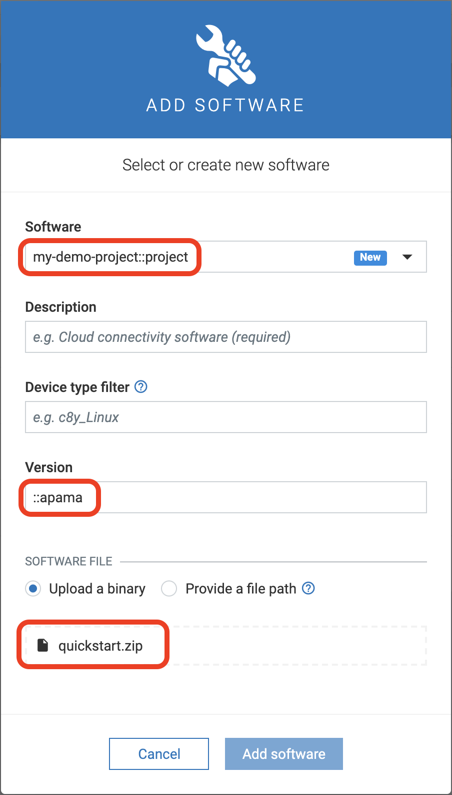

Apama Software Management Plugin
The Apama plugin, part of the Apama thin-edge support package, can be used to install Apama projects using the Cumulocity software management feature.
Prerequisites
The Apama thin-edge support package must be installed before you can install Apama projects on thin-edge. The recommended way of installing Apama support on Debian based distributions is with the apt package manager. Further details about this can be found in the thin-edge.io documentation at Manage the software on your devices from Cumulocity cloud.
Set up the Debian repository from which the Apama packages will be installed
- In the Cumulocity IoT tenant, open the Device Management app, go to the Management menu option and select the Software repository.
- Click Add software at the right of the top menu bar.
- In the ADD SOFTWARE dialog enter the following details:
- Software: apama-repo
- Description: apama-repo (or something else if you choose)
- Device Filter Type: (leave empty)
- Software Type: apt
- Version: 2022::apt
- SOFTWARE FILE: check the Provide a file path option and enter the URL: https://downloads.apamacommunity.com/debian/apama-repo_2022_all.deb
- Click the Add Software button.
- Now select the Devices menu option and then select All devices.
- In the list of devices, select the thin-edge device installed previously.
- In the sub-menu for the device, select the Software option.
- Click the Install software button in the bottom left; the apama-repo should be listed.
- Click the drop-down arrow on the right and check the 2022::apt radio button, then click Install.
- Finally, click the Apply changes button in the lower right of the panel.
Add the Apama thin-edge support package to the tenant software repository and deploy it to thin-edge
- Return to the Device Management app and go to the Management menu option and select the Software repository.
- Click Add software at the right of the top menu bar.
- In the ADD SOFTWARE dialog enter the following details:
- Software: apama-thin-edge-support
- Description: apama-thin-edge-support (or something else if you choose)
- Device Filter Type: (leave empty)
- Software Type: apt
- Version: latest::apt
- SOFTWARE FILE: select the Provide a file path option and give an empty space (' ').
- Click the Add Software button.
- Now return to the Devices menu option and then select All devices.
- In the list of devices, select the thin-edge device installed previously.
- In the sub-menu for the device, select the Software option.
- Click the Install software button in the bottom left; the apama-thin-edge-support should be listed.
- Click the drop-down arrow on the right and check the
latest::aptradio button, then click Install. - Finally, click the Apply changes button in the lower right of the panel.
After installation of the support for Apama onto the thin-edge device, the correlator will attempt to start, but will fail initially because there is not yet an Apama project installed. Instructions are given below for installing an Apama project on the device.
Install Apama projects from Cumulocity
Before an Apama project can be installed on the device using the software management feature in Cumulocity, the project files need to be added to the Cumulocity software repository.
There is a naming convention that you need to follow while creating software entries for Apama artifacts in the software repository.
For Apama projects:
- The version must be suffixed with
::apamaas in1.0::apamaor just::apamaif no version number is necessary. - The uploaded binary must be a
zipfile that contains theprojectdirectory. If a directory namedprojectis not found by the plugin at the root level in the zip, it is considered invalid.

Once the software modules have been added to the software repository, these can be installed on the device just like any other software from the Software tab of the device in the Cumulocity device UI.
Testing Apama Plugin
Here is an Apama project that you can use to test this plugin.
Add this project as a software package in the Cumulocity software repository by following the instructions in the previous section. Once added, this Apama project can be installed on any target device. You can test if the project was successfully installed by running the following Apama command:
/opt/softwareag/Apama/bin/apama_env engine_inspect -m
You can expect an output like this:
Monitors
========
Name Num Sub Monitors
---- ----------------
TedgeDemoMonitor 1
You can find more information on this test Apama project here.